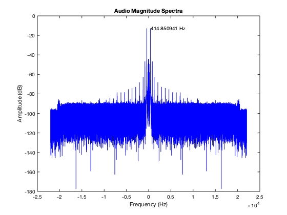

Contents
Intro
Due to the length of the code and multiple function being used, I have created a second script to generate the written report. The actual code will be at the end of this document in the appendix.
% Written Report close all;
Section 1
Find the max value of the tuning fork
[max_value_FT_db, max_index_FT_db] = max(audio_FT_db);
fund_freq = abs(frequency(max_index_FT_db)); % Fundamental Frequency of Tuning Fork
A)
Frequency Domain plot in dB
plot(frequency, audio_FT_db,'b'); xlabel('Frequency (Hz)'); ylabel('Amplitude (dB)'); title('Audio Magnitude Spectra'); text(fund_freq , max_value_FT_db, sprintf('%f Hz', fund_freq))
B)
From the above plot, we can see that our frequency is calculated as 415.8509 Hz. This is 0.4491 Hz away from the 415.3 Hz that is stamped on the tuning fork. We can express this as a percentage: 0.4491/415.3 = 0.1081% away from the stamped frequency.
C)
We can see that the magnitude spectrum is symmetric about the 'y-axis'. This is because the magnitude spectrum will always have even symmetry.
Section 2
Document your filter design for improving the signal to noise ratio of the noisy tuning fork?
% In order to increase the signal to noise ratio, I scaled the audio % amplitude by dividing every point by the max audio value. This amplified the % audio so that every point was between 0 and 1, the same as the random % signal. %Adding Random Numbers to audio noisy_audio = audio / max(audio) + randn(N,1); % State what window you used, the lowpass cutoff frequency Fc, and the % centre frequeny of the bandpass filter Fo. Also give the frequenies in % Hz? % Window: % I used the Kaiser window, due to its ability to ajust the shape % parameter. Originally, I tried to set the ripple (delta_pass delta_stop) % and attenuation (A) parameters, and use those to calculate the required % alpha filter order, and D parameter such that I could create the kaiser % window to meet these requirements. I stopped doing this because I found % better success in setting the alpha parameter and filter order directly. % Lowpass cutoff frequency, Fc: % I used 10 Hz as my cuttoff frequency. This was entirely due to trial % and error. Listening to the signal, and tuning the cut off % frequency. % Center Frequency of the Bandpass filter, Fo: % I set the center frequency of the Bandpass filter by multiplying the % kaiser window by - exp(j*2*pi*(F_max/Fs)*n1)) - as seen below. kaiser_BPF1 = real(kaiser_LPF1.*exp(j*2*pi*(F_max/Fs)*n1)); kaiser_BPF2 = real(kaiser_LPF2.*exp(j*2*pi*(F_max/Fs)*n2)); % I did this due to the Fourier Transform Frequency Shifting Property % which states that multiplying a signal in the time domain by % exp(j*W*t) will shift your signal to the right in the frequency domain % by W. Another thing to note is that I multiply by F_max(fundamental % frequency of the tuning fork), divided by Fs(samplerate). This is % because my frequency axis is: frequency=linspace(-Fs/2,Fs/2,N)'; % Also give the frequency in Hz: % Fc = 10Hz % Fo = 415Hz
Section 3
Show the magnitude spectrum of the bandpass filter used for filtering the noisy tuning fork spectrum. Adjust the x-axis scale so the passband, transition band and stop band are easily distinguished.
% Frequency Domain figure hold on plot(frequency, mag2db(kaiser_BPF1_FT), 'b') plot(frequency, mag2db(kaiser_BPF2_FT), 'r') title('Overlapped Kaiser BPF Windows') xlabel('f'); ylabel('H(f) (db)'), legend('Bandpass Filter 1','Bandpass Filter 2') hold off
Section 4
% Describe the method that you used to filter the noisy tuning fork % signal. Did you implement a convolution, difference equation, or work % in the frequency domain? % In order to filter the noisy tuning fork, I created a function % that accepts and array of filters, and applies each of these % filters to the audio signal by sequentially multiplying both the % filter and audio signal in the frequency domain. This can be seen % in the 'myFilter' function.
Section 5
% Generate two plots which show the unfiltered tuning fork magnitude % spectrum and the filtered tuning fork spectrum. Show the y-axis in db % and the x-axis in frequency(Hz or kHz). % Audio vs Filtered Audio figure subplot(2,1,1) plot(frequency, mag2db(audio_FT),'b') subplot(2,1,2) plot(frequency, mag2db(filtered_audio_FT),'r') title('Audio and Filtered/Cleaned Audio') xlabel('n'); ylabel('H(f) (db)')
Section 6
%Power Spectrum attempt 1 % Power Spectrum PowerSpectrum1 = (1/N) * abs(myVoice).^2; autoVoice1 = autocorr(myVoice,1000); MyFrequency1 = Fs/max(autoVoice1); subplot(2,1,1) plot(PowerSpectrum1) title('Power Spectrum1 of my Voice') subplot(2,1,2) plot(autoVoice1) title('AutoCorrelation1 of my Voice') % Power Spectrum attempt 2 PowerSpectrum2 = fftshift(fft(myVoice).*conj(fft(myVoice))); autoVoice2 = ifft(PowerSpectrum2); MyFrequency2 = Fs/max(autoVoice2); subplot(2,1,1) plot(PowerSpectrum2) title('Power Spectrum2 of my Voice') subplot(2,1,2) %autoVoice = autocorr(myVoice,300); plot(autoVoice2) title('AutoCorrelation2 of my Voice')
Section 7
%-------------------------------------------------------------------------